승인 후 실제 적용 · Godot 런타임 캡처
서울 히어로 · 도시 작전풍 UI
승인한 PNG 소재·폰트·명칭을 게임 화면에 연결했습니다. 상점·책등·지원 거점·유리 카드·출동 단말의 고유 표현은 유지했습니다.
아래 이미지는 실제 화면 클래스를 합성 상태로 렌더링한 결과입니다. 사용자 저장 읽기·쓰기와 전투 시뮬레이션은 차단했습니다.
길드 본부
915×412 · 실제 구현고정 건물·공통 관리판·재화 묶음
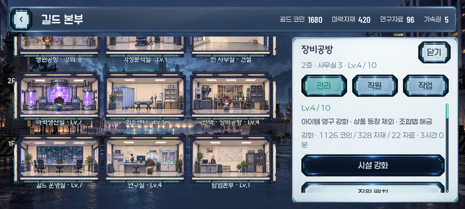


로비
915×412 · 실제 구현기존 유리 도구와 출동 단말·출동 준비
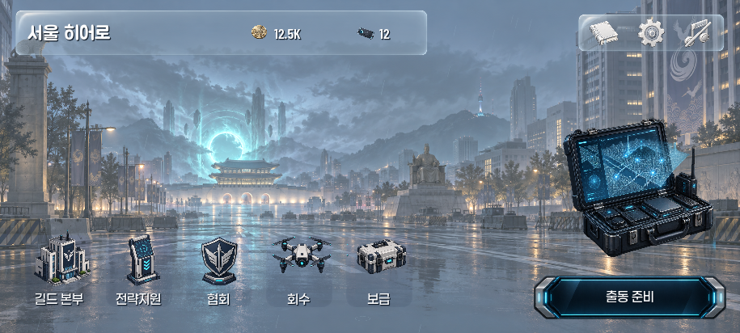
게이트24
915×412 · 실제 구현편의점 진열 유지·같은 형상의 탭·공용 버튼
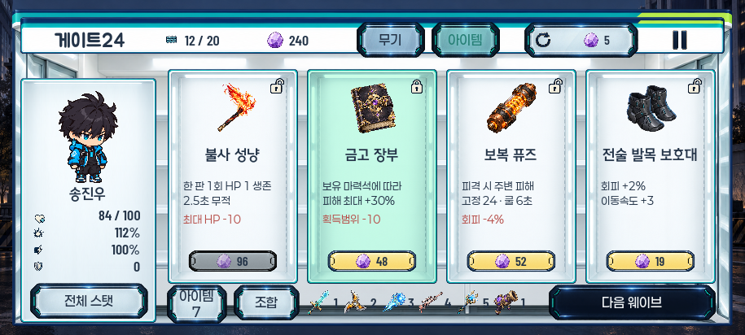


각성자 선택
915×412 · 실제 구현서울 배경 유리 카드·공통 상세판
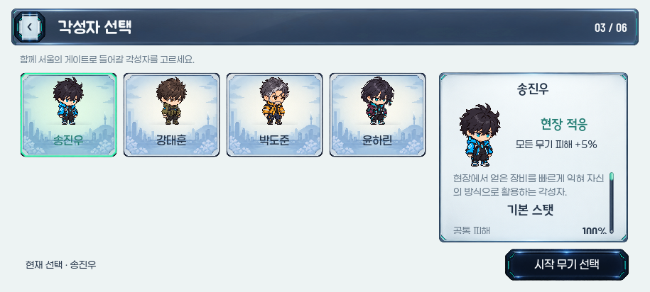


자료집
915×412 · 실제 구현책등과 48px 여백·공용 탭
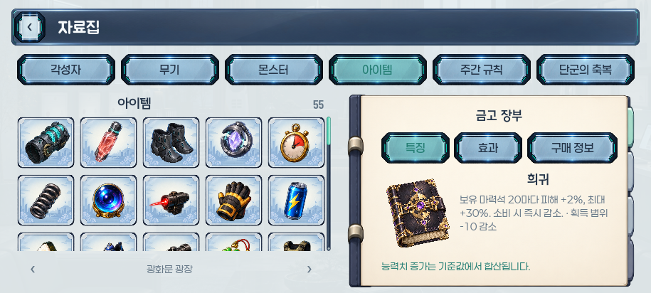


전투 HUD
915×412 · 실제 구현기존 가벼운 배치·재화·무기 레벨
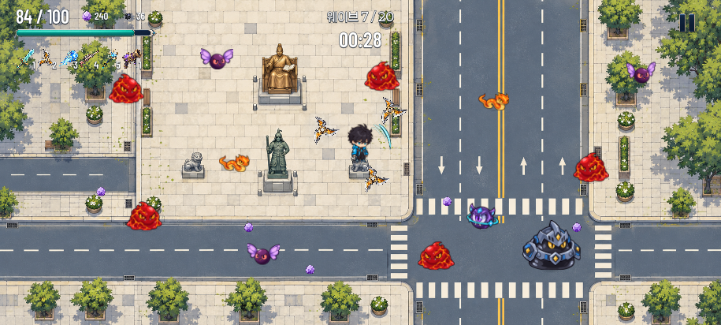


맵 선택
915×412 · 실제 구현공통 헤더와 지역 정보판
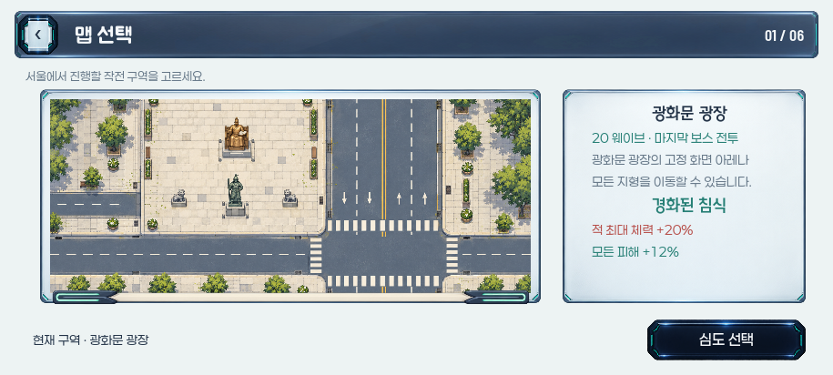
심도 선택
915×412 · 실제 구현20단계·선택·클리어·잠금
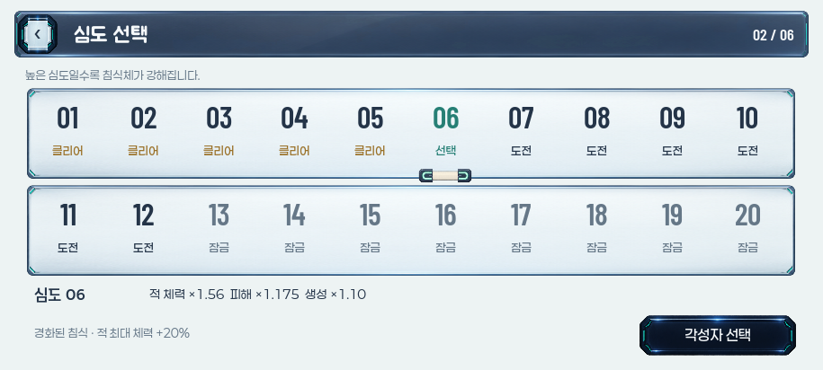
시작 무기 선택
915×412 · 실제 구현7종 목록과 상세 정보
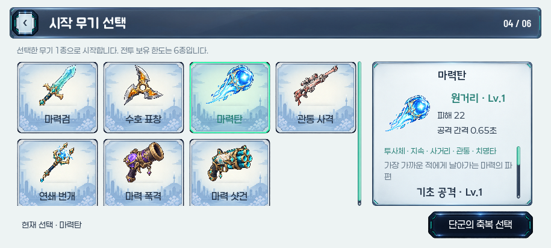
단군의 축복 선택
915×412 · 실제 구현축복 없음·보유 레벨·효과
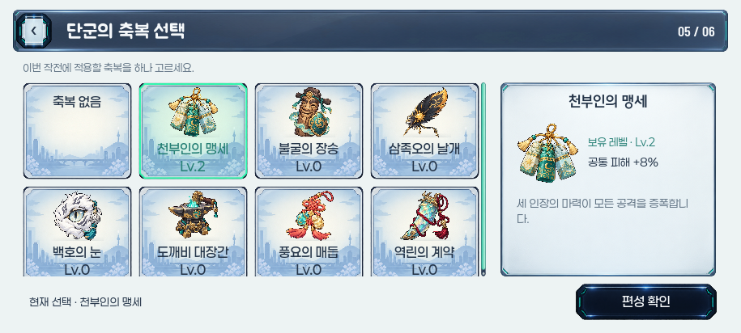
편성 확인
915×412 · 실제 구현지역과 편성·최종 작전 투입
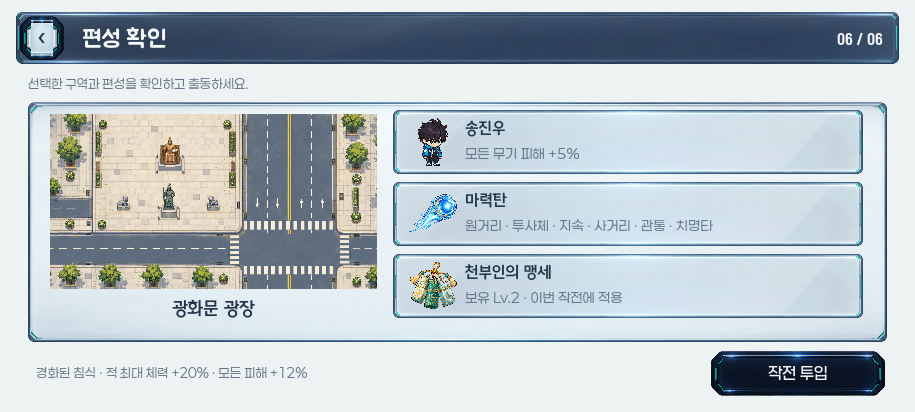
전략지원
915×412 · 실제 구현같은 행의 선택 색조·성장
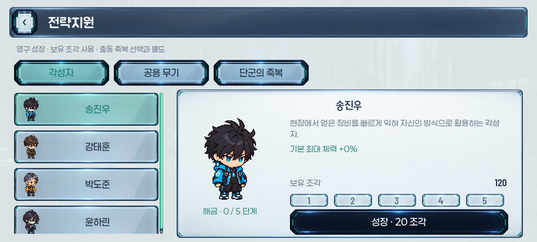
협회
915×412 · 실제 구현공통 정보판·실제 영구 지원
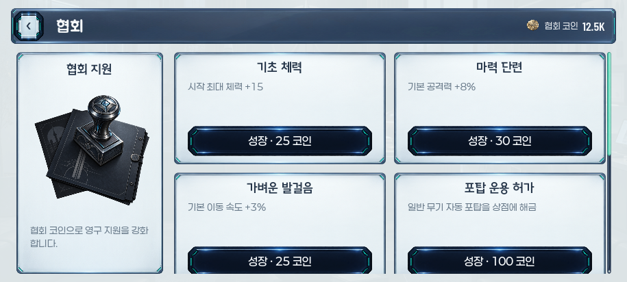
설정
915×412 · 실제 구현음량·데이터 조작 행
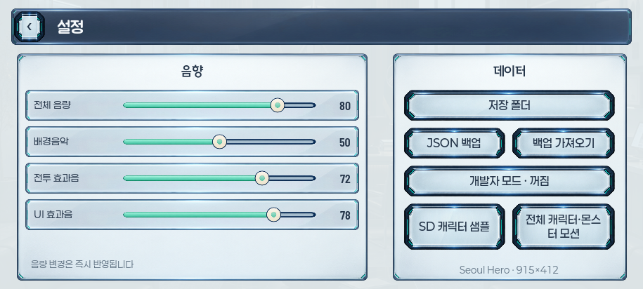
회수
915×412 · 실제 구현지원 거점과 보상 수령
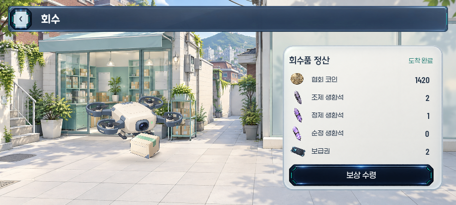


보급
915×412 · 실제 구현기존 개봉 장면과 공통 버튼
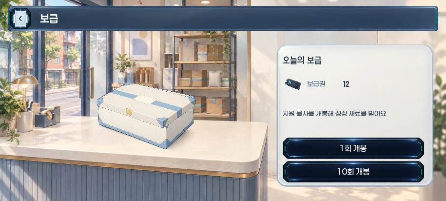


일시정지
915×412 · 실제 구현공통 중앙 팝업
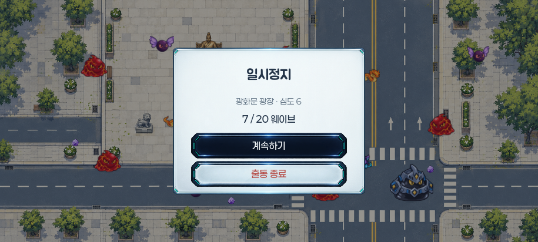
작전 결과
915×412 · 실제 구현협회 코인과 로비 복귀
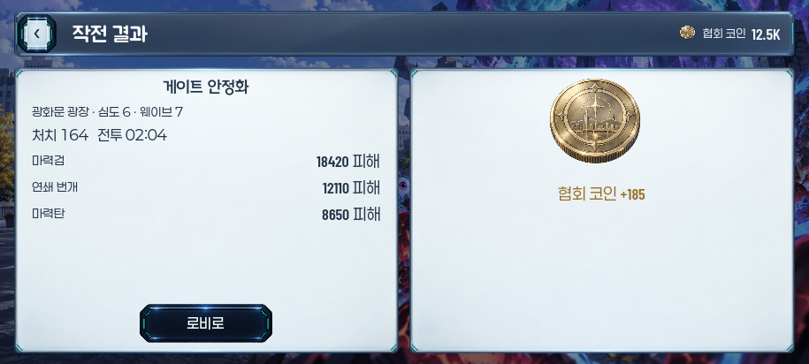
생환석
915×412 · 실제 구현보유 등급과 생환 선택
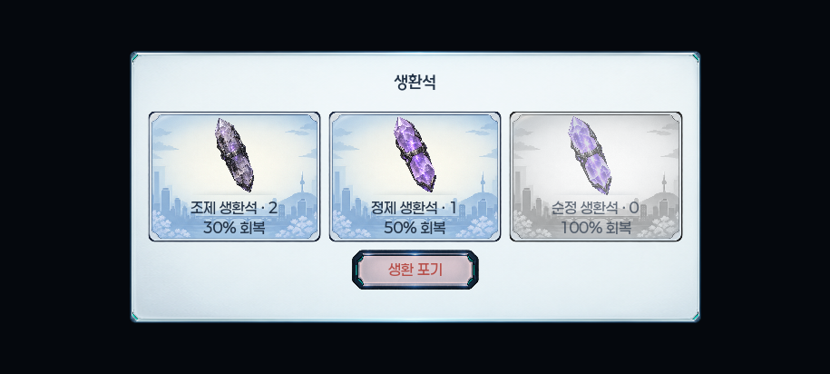
무기 분기
915×412 · 실제 구현공용 선택 팝업
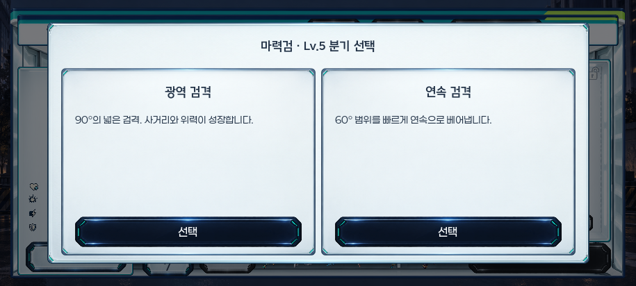
조합
915×412 · 실제 구현길드 조합 기능 유지
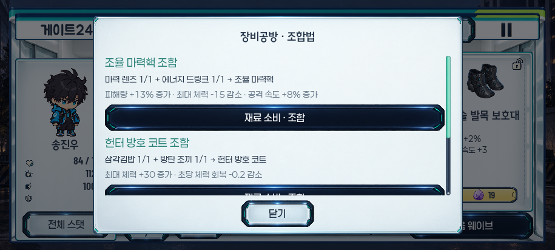
타이틀
915×412 · 실제 구현승인된 로고·19px 이어하기/새로하기 유지
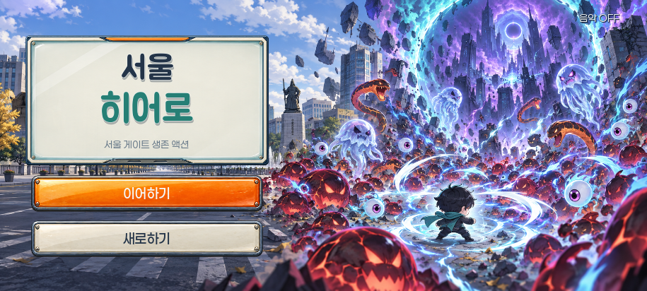